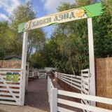
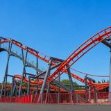
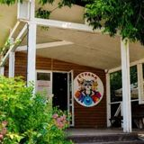

Тайкун на настоящей карте парка
Построй свою Сказку
Вы — директор «Сказки» в Крылатском. Ходите по настоящим аллеям парка, восстанавливайте аттракционы на их реальных местах, следите за животными, чистотой и бюджетом и принимайте решения по ситуациям, которые возникают каждый день.
0объекта для стройки
0сотрудников
0объектов на карте


Управляющая парком«К входу подъехали школьные группы. Открываем дополнительную кассу?»


